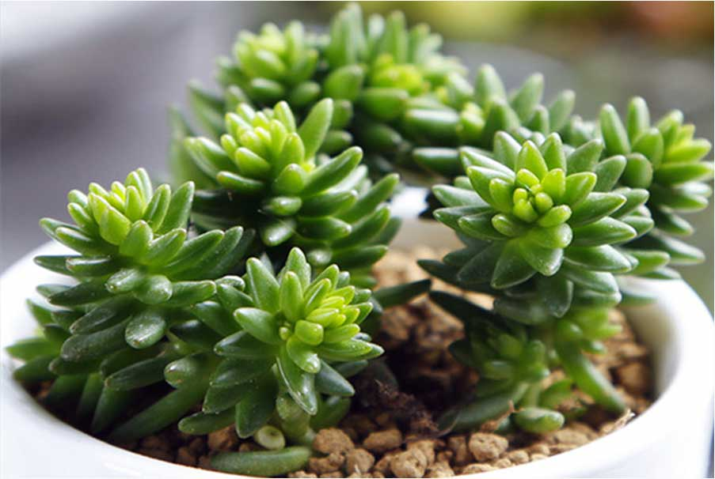

湖南万芳园林艺术有限公司 欢迎您！
SUCCULENT PLANTS
白花小松叶形叶色较美，有一定的观赏价值。盆栽可放置于电视，电脑旁，可吸收辐射，亦可栽植于室内以吸收甲醛等物质，净化空气。
一种比较迷你的多肉植物，很适合用于其它多肉植物混搭组合，常年为绿色，日照时间增多及温差巨大的情况下会整株变为粉红色。夏季会缓慢生长，所需水分较少，极易繁殖和群生，繁殖方式以扦插为主，亦可叶插。
多年生迷你多肉植物，植株矮小，分枝与叶片很短，贴在肉质茎上，叶肉质轮生，一般旋转展开，叶尖经阳光照射边缘有红色，花顶生，白色，花期一般4～5月份。
性喜阳光，耐旱，耐贫瘠，稍耐半阴，不耐寒，不适宜过分潮湿的土壤和光线太弱的环境，适应性强，较容易栽培，夏季高 温生长缓慢，适当增加关照。
浇水:平时养护保持盆土偏干，不宜过湿，干燥季节可喷微量雾状叶面水。
温度:生长适温20～28℃左右，冬季室内越冬，室内温度不低于10℃为好。
施肥:一般在植物生长季节每2周左右，喷施叶面薄肥一次。
土壤:盆栽宜选用通气、排水良好、富含石灰质的砂质土壤。
病虫害:病虫害极少，平时养护注意通风透光即可
白花小松盆栽，具有一定的耐干性，勿积水，浇水土干透一定要浇透，浇水时针对底部有孔盆器可进行浸盆法进行，针对无孔植物可用小器具如勺子等进行慢慢浇水。
浇水最好尽量不要积具于叶片上，也要防止盆内长期积水。夏季高温要注意通风与遮荫，避免烈日暴晒，其他季节养护要给予充足阳光。
联系电话：0731-1818-8888